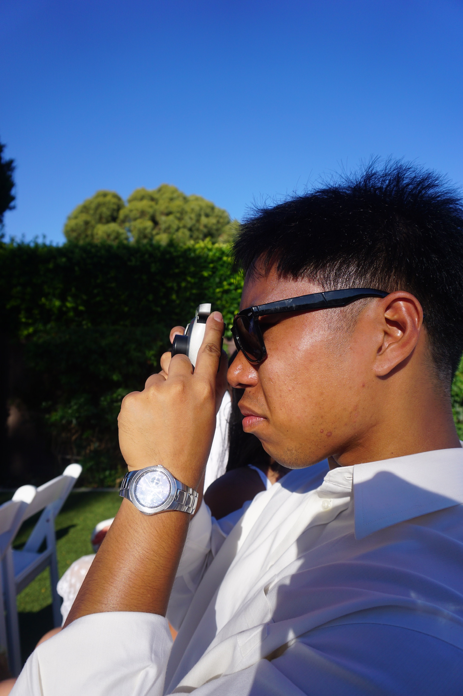
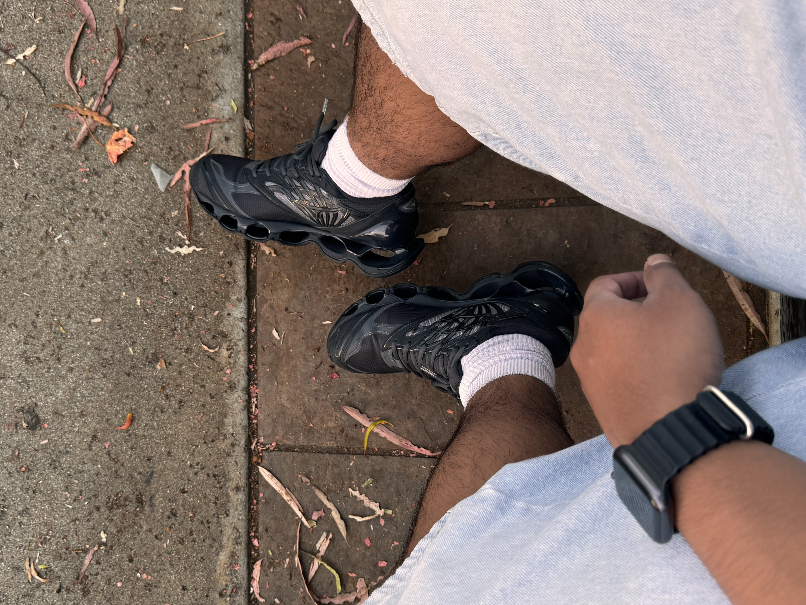
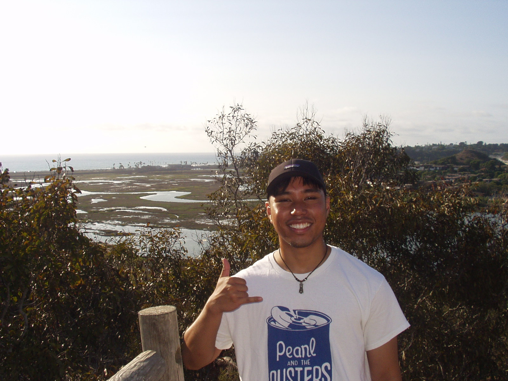

Jude Gamba | Dilly Dally Enthusiast
Currently I am taking three very hard CS courses and somehow trying to balance web development, operating systems, and computer graphics.


If I had a dollar for how many times I've wanted to give up, I could pay off the entire US debt lol. But I didn't so heres some interesting stuff I've done and kind of enjoyed doing.

Currently I am taking three very hard CS courses and somehow trying to balance web development, operating systems, and computer graphics.
